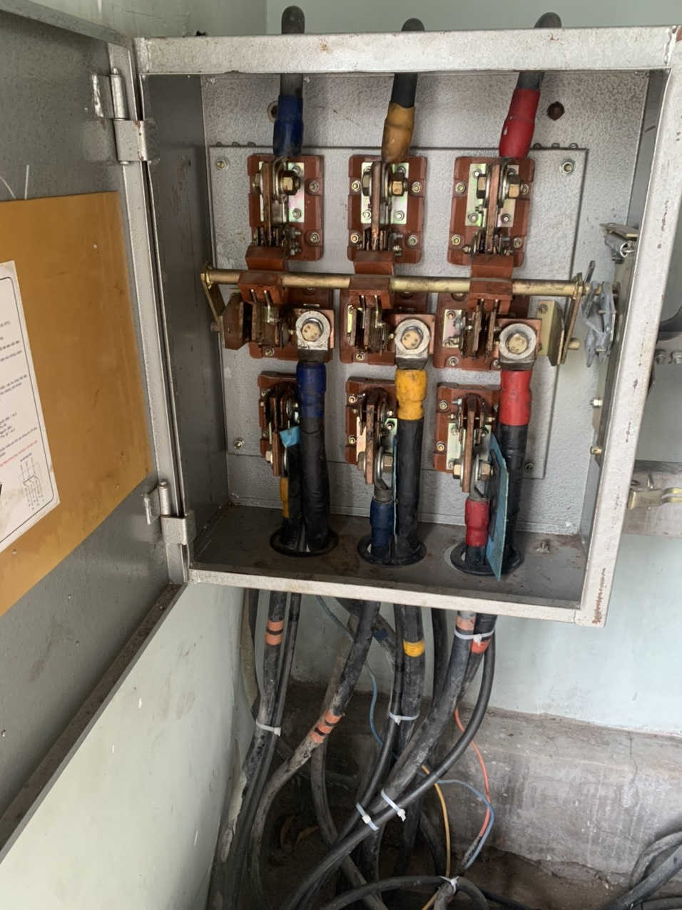

Dịch vụ sửa chập điện khẩn cấp
Sửa chập điện khẩn cấp là dịch vụ thường xuyên được yêu cầu tại Tuấn Đạt. Tình trạng này rất hay xảy ra do sơ xuất của người dùng,hay thậm chí là do hệ thống điện và thợ điện đã làm sai kỹ thuật, tiêu chuẩn từ lúc bắt đầu tiến hành lắp đặt hệ thống điện. Với đội ngũ thợ sửa chập điện có kinh nghiệm, kỹ thuật cao cùng với máy móc hiện đại. Tuấn Đạt đã xử lý rất nhiều trường hợp sự cố chập điện cho khách hàng với nhiều nguyên nhân rất đa dạng.
Sửa chập điện khẩn cấp rất quan trọng nên yếu tố tiên quyết là phải tìm đúng nguyên nhân và xử lý triệt để cho khách hàng. Tự tin với đội kỹ thuật lành nghề Tuấn Đạt sẽ đem lại trải nghiệm dịch vụ tốt nhất dành cho khách hàng !
Nếu chưa đủ kinh nghiệm và kiến thức chuyên sâu về sửa chập điện có thể gây mất an toàn điện thậm chí nguy hiểm đến tính mạng của người sửa điện.Vì vậy,để tiết kiện thời gian và công sức quý khách liên hệ ngay với Fisthome sẽ có mặt ngay sau 1 cuộc điện thoại và không làm quý khách phải thất vọng!
Vậy hiện tượng chập điện là gì?
Hiện tượng chập điện xuất hiện khi 1 phần của dòng điện dương chạm vào 1 dây trung tính hoặc một phần của mạch điện gây ra đoản mạch. Khi điện trở của dây dẫn tăng lên cao đột ngột sẽ khiến nó bị sinh ra tia lửa điện và phá hủy các thiết bị điện.
Ngắn mạch,đoản mạch là gì?
Ngắn mạch,đoản mạch là hiện tượng mạch điện bị điện chập,đây cũng là cách nói khác của sự cố điện chạm chập.
Những công việc cần làm ngay và cách xử lý khi nhà bạn có hiện tượng bị chập điện Mất điện bạn phải làm sao?
Các cách xử lý khi nhà bị sự cố điện bạn cần tuân theo 3 tiêu chí bên dưới của Tuấn Đạt,vấn đề tiên quyết bạn làm càng nhanh càng tốt trước khi bạn tiến hành gọi thợ sửa chập điện khẩn cấp của chúng tôi!
1/ Bạn đừng cố gắng bật lại Aptomat(cầu dao) nếu bạn không hiểu rõ nguyên nhân gây chập điện. Khi Aptomat( cầu dao) đã nhảy sang chế độ OFF, dù bạn có cố gắng bật ON nhưng Aptomat(cầu dao) sẽ luôn chuyển sang chế độ OFF, bạn không nên bật lại như vậy vì có thể gây nên hiện tượng cháy nổ rất nguy hiểm.
2/ Rút tất cả các thiết bị sử dụng điện trong nhà để tránh gây tổn thất hư hỏng.Ví dụ : phích cắm cho các thiết bị, tủ lạnh, lò vi sóng, ti vi, máy giặt…
3/ Cần quan sát các vị trí đã từng cháy nổ trước đó: có mùi khét,tiếng kêu xẹt xẹt,các vết ẩm trên tường,hoặc thiết bị có vết cháy…Cách này có thể hỗ trợ cho thợ sửa chập điện dễ dàng phát hiện và chuẩn đoán nguyên nhân.
Các nguyên nhân dẫn tới hiện tượng chập điện
Qua kinh nghiệm sửa chập điện lâu năm và đã gặp nhiều trường hợp-Fisthome đúc kết ra được một vài nguyên nhân:
Tình trạng nhảy Aptomat (Cầu dao) do Aptomat không đủ tải, dòng cắt hoặc đã hư hỏng. Các thiết bị Aptomat có chỉ số nhỏ: 16A,20 A, 30 A, 42 A… sẽ không đủ tải để sử dụng cho một tầng hay toàn bộ căn nhà, nhà hàng,khách sạn… với rất nhiều các thiết bị có công suất lớn như điều hòa, tủ lạnh ,lò vi sóng, bếp hồng ngoại… có thể gây quá tải,gây nên sự cố điện (Như Hình 1).
Sử dụng các thiết bị điện kém chất lượng (Như hình 2),trường hợp này ổ cắm điện kém tiếp xúc, không chịu nổi tải đã cháy gây ra tình trạng chập điện.Xấu hơn nữa, trong trường hợp này CB cũng không hoạt động do sử dụng phải thiết bị kém chất lượng không có nguồn gốc xuất xứ.
Điện chập nguyên nhân do quá trình thi công không đảm bảo (tính toán dây không đủ tải, các mối nối kém chất lượng…(Như hình 3,5,6)
Sự cố chập điện đôi lúc do tác nhân từ bên ngoài như dây điện bị chuột cắn,nước mưa,ẩm ướt, nước ngầm rò rỉ vào thiết bị điện (Như hình 4). sửa chập điện nguyên nhân do aptomat không đủ tải
Cách tránh chập điện mất điện trong nhà
Tránh sử dụng nhiều ổ cắm cùng lúc và tránh làm quá tải bất kỳ một phích cắm nào Hãy tập thói quen kiểm tra bộ phận bảo vệ mạch điện của bạn.
Chú ý kỹ đến tình trạng việc đi dây điện nổi trong nhà dẫn điện. Dây điện có thể bị mòn hoặc lớp bảo vệ dây thực sự có thể bị đứt theo thời gian, khiến dây bị hở. Điều này có thể khá nguy hiểm và có thể dẫn đến chập điện cháy nhà Điều quan trọng khi mua, lắp đặt và sử dụng một thiết bị điện là bạn phải tham khảo sách hướng dẫn và tự làm quen với khả năng chịu tải phù hợp của thiết bị đó.
Điều quan trọng cần hiểu là vì thiết bị của bạn quá tải có thể dẫn đến chập điện mất điện.
Nên làm gì khi bị chập điện tại nhà?
Điện rất quan trọng đối với mọi người và mọi nhà.
Tuy nhiên, nếu hệ thống điện của nhà bạn xuất hiện sự cố, thì bạn đừng cố gắng tự giải quyết vấn đề.
⇒ Liên hệ với các thợ sửa điện dân dụng có tay nghề cao và được chứng nhận tại Tuấn Đạt để xác định vấn đề của bạn và đưa ra cách xử lý nhà bị chập điện an toàn và hiệu quả. Hãy đặt niềm tin của bạn vào tay một số nhân viên giỏi nhất trong ngành.
Lên lịch kiểm tra tại nhà hệ thống điện của bạn ngay hôm nay!